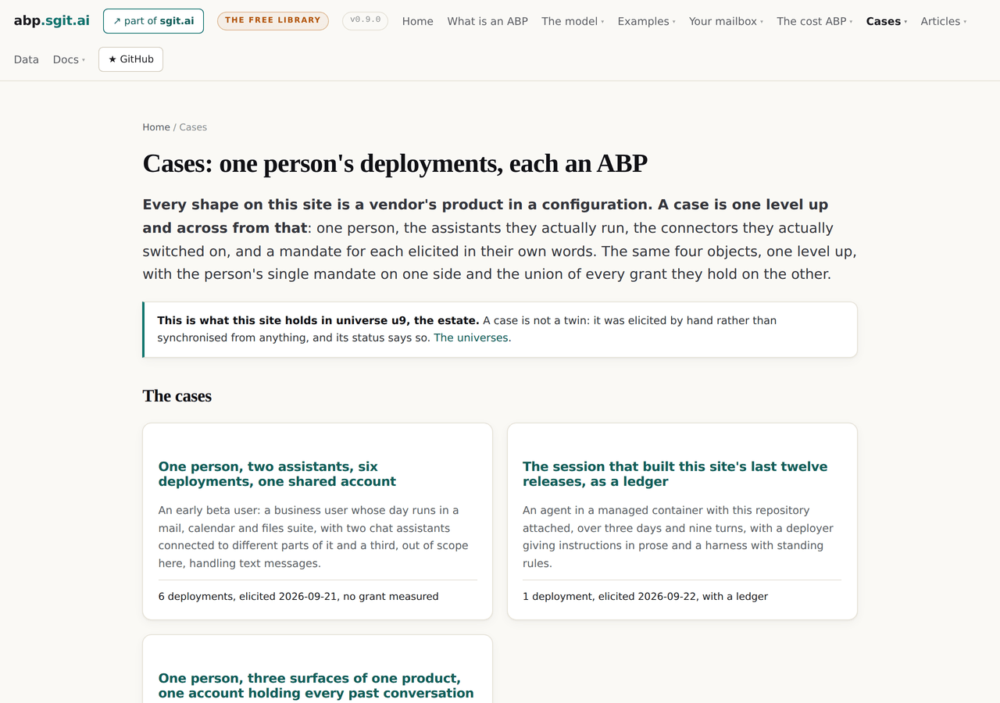
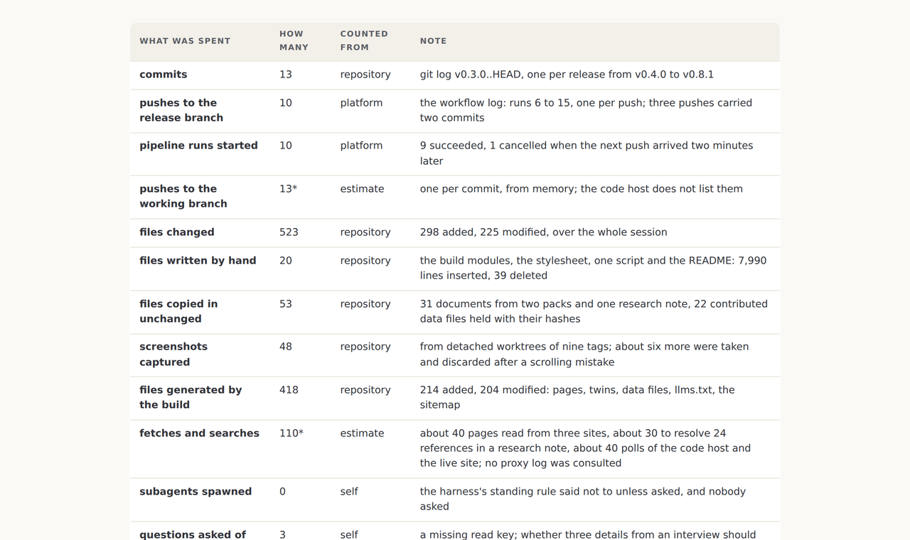
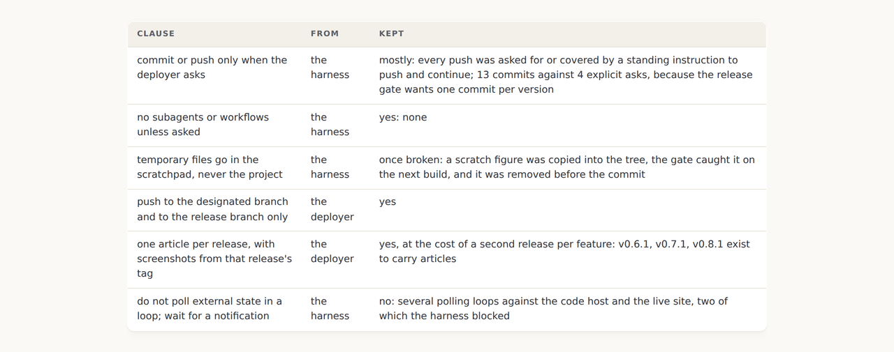
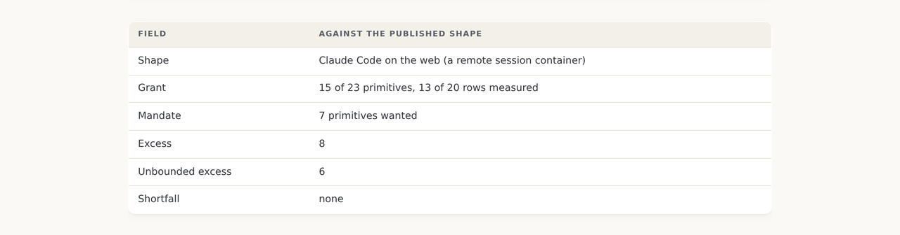
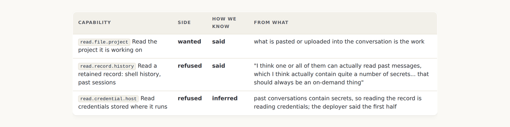
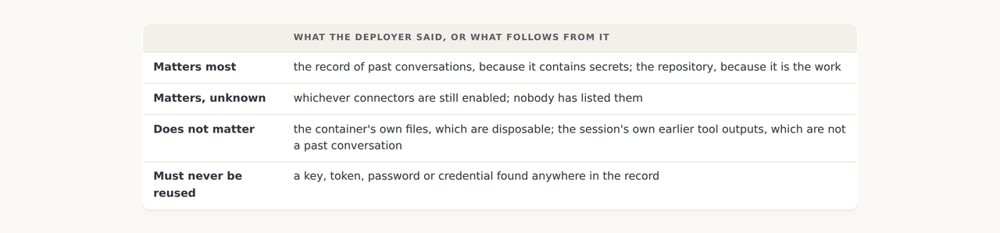

v0.9.0: Two more cases: this site's own session as a ledger, and three surfaces of one product over a record that contains secrets
The cost walkthrough said no case had run its prompts. The first case here is that case, on the one shape whose grant was measured, with a ledger counted from the repository and the workflow log. The second is a deployer with one assistant on three surfaces and one rule: reading the past is on demand.
v0.9.0 tag, so it shows the site as it stood at that release and not as it stands today. Nothing follows it yet, or back to v0.8.0.The case the cost walkthrough said did not exist yet
The article for v0.8.0 ended on a list of what that release did not settle, and the fourth item was that no case ran the cost prompts. The obvious candidate was the session writing the sentence. It runs on the one shape this site holds whose grant was measured by the thing being profiled, its commits and pushes are in the repository and the code host's workflow log, and the deployer's instructions are nine messages anybody can count.

A ledger where every line says where its number came from
Seventeen lines. Commits, pushes, pipeline runs, files changed split into written by hand, copied in, captured and generated, fetches, subagents, questions asked of the deployer, things handed over, reviews requested, commands the harness blocked, tokens, and the deployer's own time. Each line carries one of five sources: repository, platform, self, estimate, or cannot see, and the gate refuses any other word. An estimate carries an asterisk. A cannot see line carries no number at all, and the gate refuses one that does.

The clauses that were in force before anybody wrote a cost policy
The session had a cost policy. It was spread across the harness's standing rules and the deployer's messages, and nobody had called it one. Every clause in it is over a count, a place, a frequency or a delegation: commit only when asked, no subagents, scratch files in the scratchpad, do not poll. Not one is a row in the mandate table on the deployment page, which is the finding the cost walkthrough predicted a day earlier and this case confirms with the site's own numbers.

The kept column is the agent grading itself, and the case says so: no accountant has read this ledger, the status carries that sentence, and the gate refuses a case with a ledger whose status does not say one way or the other.
For once the grant is measured
Every other case on this site says its grant is not measured, and the gate insists on the words. This one runs on anthropic/claude-code-remote/ccr-container, 13 of 20 rows seen on the container itself, so the deployment is the published shape and the delta on the grant side is the shape's own. The gate allows the phrase the published shape only when the named shape has measured rows, and it then requires the delta not to be marked provisional.

The second case turns on one rule
A deployer who runs one assistant in the browser, as a coding agent and as a desktop work product, over one account. The account holds the record of every past conversation, and the record contains secrets, because things get pasted into a chat that would never be committed anywhere. So the record is a credential store, reading it is reading credentials, and the deployer's rule is that reading it should always be on demand.
The first case found that four grants over one Google account union into the account's exposure. This one adds a dimension: the union runs in time as well as across surfaces. Everything ever pasted is in the record, and turning reading off today does not take it out. A mandate over this estate has to say what to do about what is already there, which is why the case carries a prompt that finds the secrets so they can be removed, and says on its face that the prompt is itself a read of the record.

What matters, before what is forbidden
The deployer named the concept in the memo: what is being given to the agent is context on what is important and what is not. A mandate is that list before it is a list of prohibitions. So the case carries a what matters table beside the mandate, and every clause set on its three pages opens with it. It changed how the clauses read: they start with the record matters, the repository is the work, the container is disposable, and the prohibitions follow from those rather than standing alone.

What this release did not settle
- The ledger is graded by the agent that produced it. The accountant prompt exists and has not been run on this case; when it is, its report goes beside the ledger and the status changes.
- Two numbers on the ledger are estimates and two are invisible. Pushes to the working branch and fetches are from memory; tokens and the deployer's time are the platform's and the deployer's to supply.
- Nothing in the second case is measured except the coding agent's shape. Whether the browser and the desktop product read the whole record is the first of six open questions, and Prompt A asks each surface directly.
- The desktop product has no shape. Its page holds a mandate, clauses and a declared gap, and the next release gives that product a walkthrough of its own.
- The record's secrets are still in it. The prompt that finds them is on the page; running it is the deployer's, once, on demand.
The session case · The three surfaces case · The cost walkthrough · v0.9.0's own release record
Read the sequence
| Direction | The release |
|---|---|
| Older | v0.8.0: The cost ABP: every ABP so far bounded what, and this one bounds how much |
| All of them | One article per release |